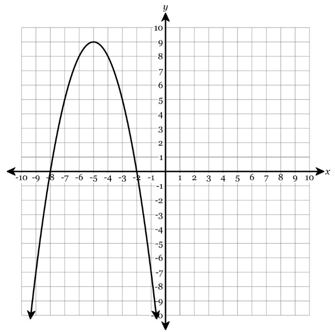

Show work and mark answers clearly.
1.
A student models a ball’s height with \(h(t)=16(t-2)^2+80\) and says the maximum height is 80 feet.
- Identify what is wrong with the model or interpretation.
- Revise the model so it represents a ball that reaches a maximum of 80 feet at 2 seconds.
- Explain how the corrected model changes the graph.
- State a reasonable domain for the context.
Show work and mark answers clearly.
1.
A student writes \(y=(x-4)(x+2)\) for a parabola with zeros \(4\) and \(-2\), then says the vertex is \((1,0)\).
- Identify what is correct.
- Identify the error in the vertex claim.
- Find the correct vertex.
- Rewrite or explain the solution so the reasoning is clear.
Show work and mark answers clearly.
1.
A proposed revenue model is \(R(x)=-2x^2+40x+300\). A student says the y-intercept means the company sells 300 items at price zero.
- Critique the interpretation.
- Find and interpret the maximum revenue.
- Find the break-even values if reasonable.
- Redesign the explanation so each feature is interpreted in context.
Show work and mark answers clearly.
1.
A student uses standard form to write a model from zeros \(-1\) and \(7\), but makes arithmetic errors expanding too early.
- Explain why intercept/factored form is a better starting form.
- Write a correct model with \(a=2\).
- Find the vertex from the intercepts.
- Rewrite only if needed and explain when rewriting is useful.
Show work and mark answers clearly.
1.
A student claims \(y=-3(x+2)^2-5\) has range \(y\ge -5\) because the vertex is \((-2,-5)\).
- Identify the correct and incorrect parts of the claim.
- State the correct range.
- Explain how opening direction changes the inequality.
- Create a corrected student explanation.
Show work and mark answers clearly.
1.
A graph-based solution is shown for a quadratic, but the student reports the y-intercept as an x-intercept.

- Identify the difference between x-intercepts and y-intercept on the graph.
- Correct the student’s labels.
- Explain how intercept form and standard form highlight different intercepts.
- Write advice that would prevent this mistake on the summative assessment.